Robin Williams
Chicago, 21 de julho de 1951 - Paradise Cay, 11 de agosto de 2014
 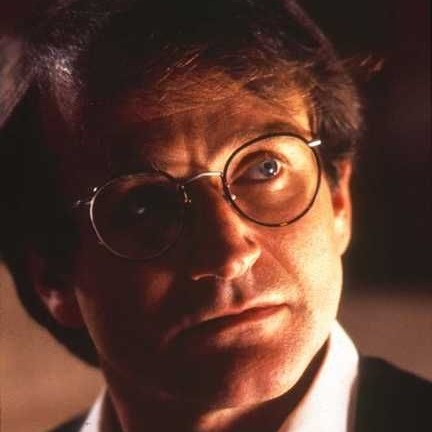
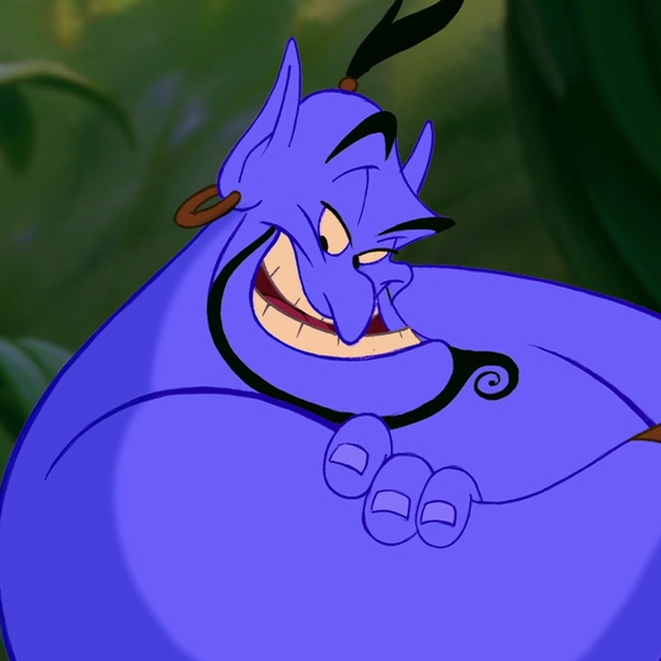
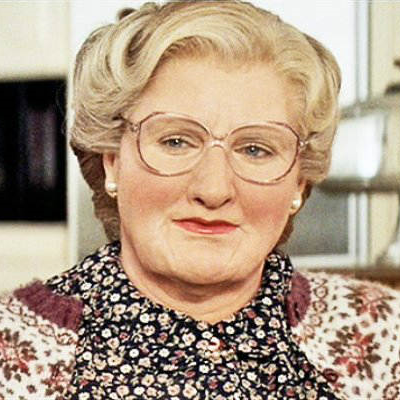
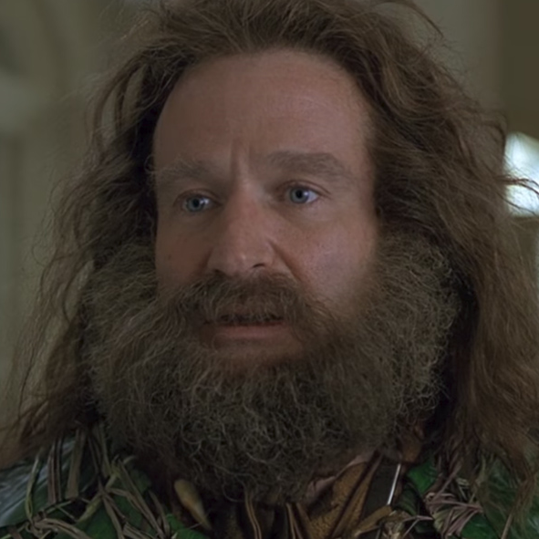
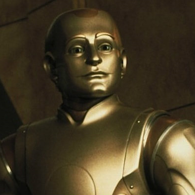
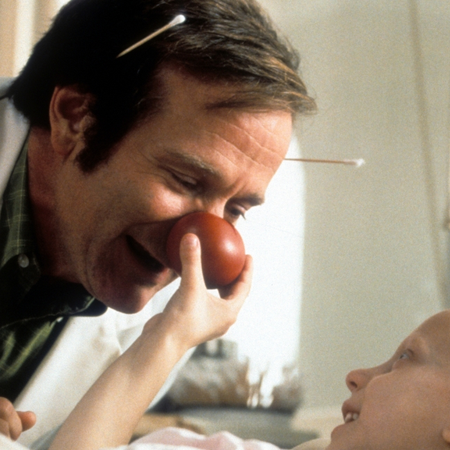
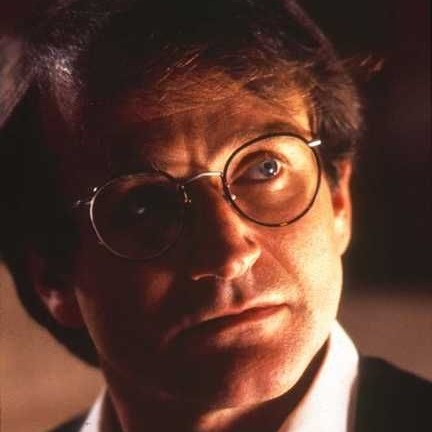
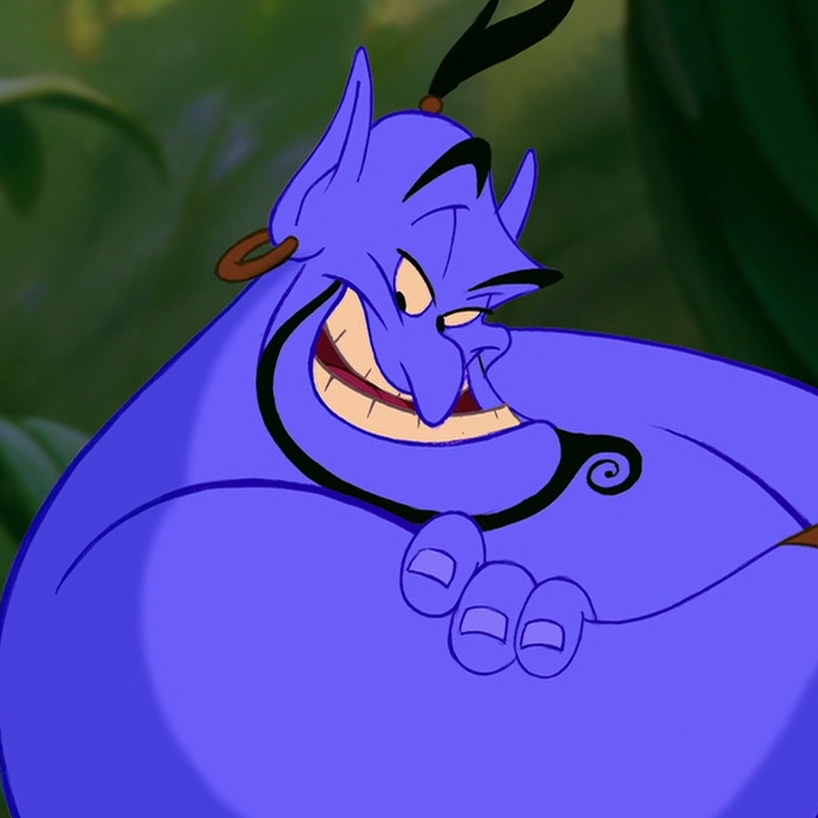
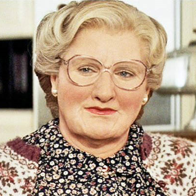
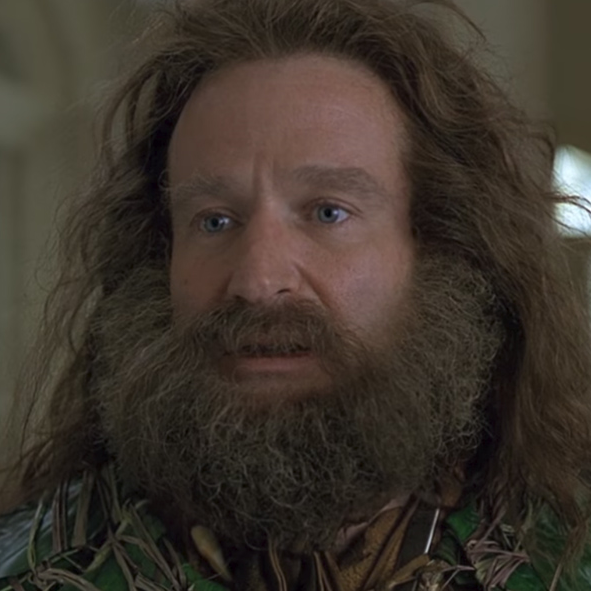
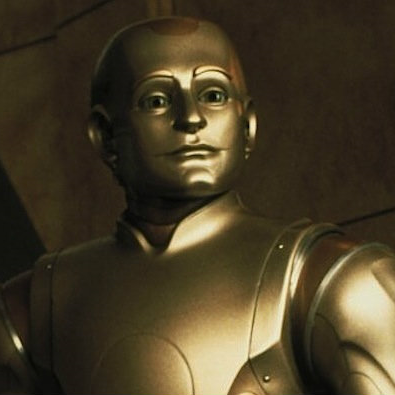
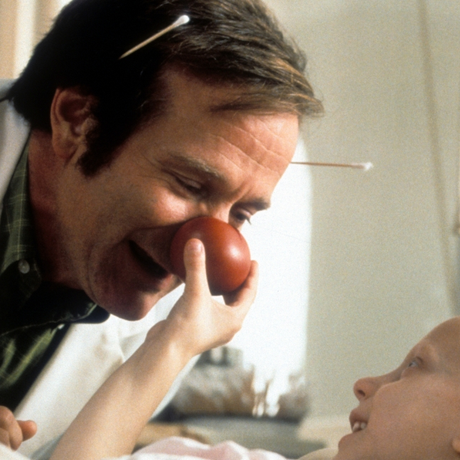
Robin Williams foi um ator e comediante americano. Após conquistar fama interpretando o alienígena Mork na série de televisão Mork & Mindy, e pelo seu trabalho posterior com stand-up comedy, Williams foi destaque em diversos filmes a partir da década de 80. Venceu o Oscar de melhor ator coadjuvante por sua performance no filme Good Will Hunting, de 1997, e também conquistou dois Prêmios Emmy do Primetime, seis Globos de Ouro, dois prêmios do Screen Actors Guild e cinco Grammys.
Filmes
-
Aladdin - 1992
Robin Williams dublou um dos melhores personagens animados da Disney: o Gênio da Lâmpada! Em 1992, ele deu a voz ao divertido azulão que tinha o poder de conceder três desejos a quem o tirasse da lâmpada mágica. Os diretores do filme construíram o personagem baseando-se unicamente na personalidade de Robin. Quando ele viu o resultado, aceitou o papel imediatamente.
-
Uma Babá Quase Perfeita - 1993
Esse é um clássico! Nele, o ator interpreta Daniel, um homem que acabou de se separar da mulher e tem a brilhante ideia de se disfarçar de babá para poder ver os filhos. Muitas crianças dos anos 90 queriam ter essa babá!
-
Jumanji - 1995
Fale a verdade: você queria ter esse jogo! Um dos filmes mais legais do ator completou 20 anos de estreia em 2016 e, nele, o astro aparece como Alan Parrish, um homem que descobre um jogo chamado Jumanji e acaba ficando preso dentro dele.
-
Flubber - Uma Invenção Desmiolada - 1997
Talvez você não se lembre desse, mas foi um dos maiores sucessos infantis nos Estados Unidos. O atrapalhado professor Philip Brainard, interpretado por Williams, descobre uma fórmula secreta que pode salvar a universidade onde ele trabalha.
-
Patch Adams - O Amor é Contagiante - 1998
Um filme de cortar o coração! Em uma cena icônica, o médico Patch Adams leva seus pacientes para tomar banho em uma piscina de miojo. O filme rendeu a Robin Williams uma indicação ao Globo de Ouro de Melhor Ator.
-
O Homem Bicetenário - 1999
É para chorar! Neste filme, ele interpreta um robô que é contratado por uma família para realizar tarefas domésticas. Com a convivência, o robô começa a ganhar sentimentos e inicia uma busca por liberdade. Lindo, né?